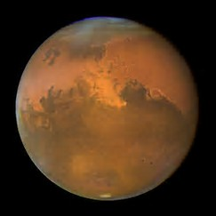

Mars is the fourth planet from the Sun and the second-smallest planet in the Solar System, after Mercury. Named after the Roman god of war, it is often referred to as the "Red Planet" because the iron oxide prevalent on its surface gives it a reddish appearance. Mars is a terrestrial planet with a thin atmosphere, having surface features reminiscent both of the impact craters of the Moon and the valleys, deserts, and polar ice caps of Earth.
| Earth | Mars | Jupiter | 150 million km | 228 million km | 779 million km |
|---|